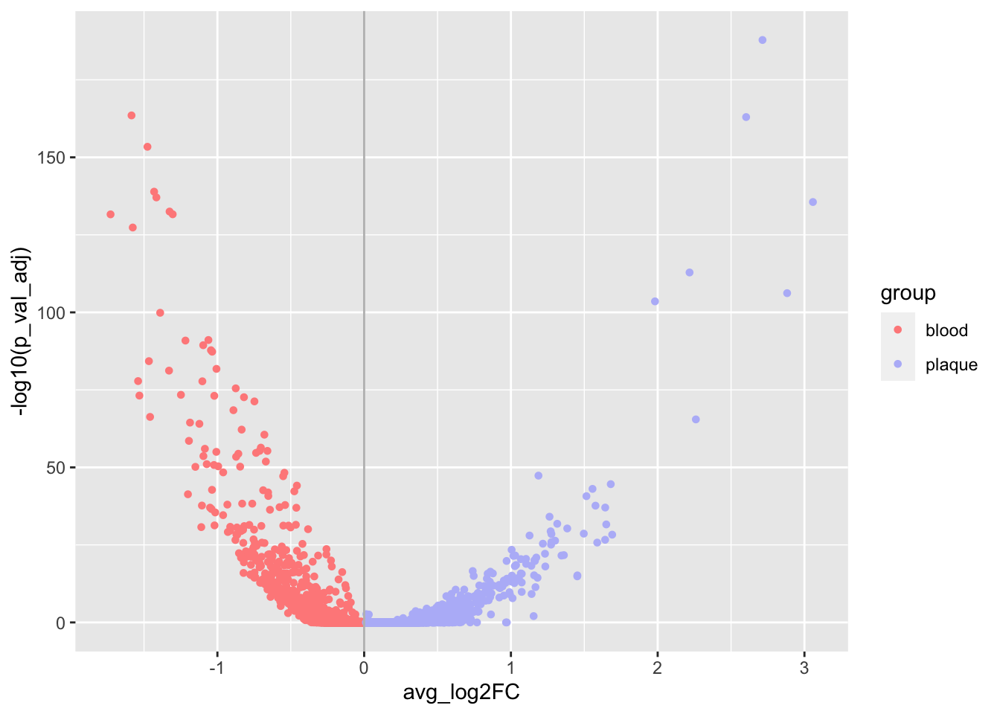
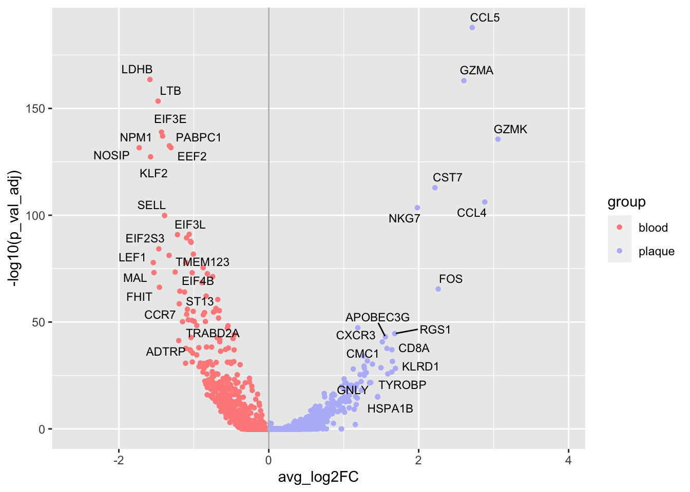

Last updated: 2021-08-12
Checks: 7 0
Knit directory: myproject/
This reproducible R Markdown analysis was created with workflowr (version 1.6.2). The Checks tab describes the reproducibility checks that were applied when the results were created. The Past versions tab lists the development history.
Great! Since the R Markdown file has been committed to the Git repository, you know the exact version of the code that produced these results.
Great job! The global environment was empty. Objects defined in the global environment can affect the analysis in your R Markdown file in unknown ways. For reproduciblity it’s best to always run the code in an empty environment.
The command set.seed(20210812) was run prior to running the code in the R Markdown file. Setting a seed ensures that any results that rely on randomness, e.g. subsampling or permutations, are reproducible.
Great job! Recording the operating system, R version, and package versions is critical for reproducibility.
Nice! There were no cached chunks for this analysis, so you can be confident that you successfully produced the results during this run.
Great job! Using relative paths to the files within your workflowr project makes it easier to run your code on other machines.
Great! You are using Git for version control. Tracking code development and connecting the code version to the results is critical for reproducibility.
The results in this page were generated with repository version 9b32803. See the Past versions tab to see a history of the changes made to the R Markdown and HTML files.
Note that you need to be careful to ensure that all relevant files for the analysis have been committed to Git prior to generating the results (you can use wflow_publish or wflow_git_commit). workflowr only checks the R Markdown file, but you know if there are other scripts or data files that it depends on. Below is the status of the Git repository when the results were generated:
Ignored files:
Ignored: .DS_Store
Ignored: .Rhistory
Ignored: .Rproj.user/
Ignored: analysis/.DS_Store
Untracked files:
Untracked: genes_up_GO.RData
Unstaged changes:
Modified: analysis/_site.yml
Note that any generated files, e.g. HTML, png, CSS, etc., are not included in this status report because it is ok for generated content to have uncommitted changes.
These are the previous versions of the repository in which changes were made to the R Markdown (analysis/vlocanolplot.Rmd) and HTML (docs/vlocanolplot.html) files. If you’ve configured a remote Git repository (see ?wflow_git_remote), click on the hyperlinks in the table below to view the files as they were in that past version.
| File | Version | Author | Date | Message |
|---|---|---|---|---|
| Rmd | 9b32803 | zhouwl | 2021-08-12 | Publish the initial files for myproject |
library(ggplot2)
library(ggrepel)
library(Cairo)该数据框包含必要的两列信息：P值（或校正后p值）和log2FC值。
rm(list = ls())
download.file("https://cdn.jsdelivr.net/gh/lily123920/figures@main/uPic/degs_t_test%E7%9A%84%E5%89%AF%E6%9C%AC.csv",
destfile = "degs_t_test.csv")
degs <- read.csv("degs_t_test.csv", header = T)
degs <- textshape::column_to_rownames(degs)
DEGs <- degs
DEGs$group <- ifelse(DEGs$avg_log2FC >0, "plaque", "blood")
DEGs$X <- rownames(DEGs)
head(DEGs) p_val avg_log2FC pct.1 pct.2 p_val_adj group X
CCL5 6.702040e-193 2.714268 0.725 0.120 1.427266e-188 plaque CCL5
LDHB 1.418228e-168 -1.585190 0.511 0.924 3.020259e-164 blood LDHB
GZMA 4.844229e-168 2.602722 0.687 0.132 1.031627e-163 plaque GZMA
LTB 1.843616e-158 -1.476611 0.510 0.921 3.926166e-154 blood LTB
EIF3E 5.620325e-144 -1.431147 0.524 0.900 1.196904e-139 blood EIF3E
NPM1 3.966687e-142 -1.415790 0.649 0.954 8.447456e-138 blood NPM12.1 上调基因的标签信息
genes_up <- DEGs[order(DEGs$avg_log2FC, decreasing = T)[1:20],] # 筛选前20个up基因进行label。
genelist_up <- genes_up
head(genelist_up) p_val avg_log2FC pct.1 pct.2 p_val_adj group X
GZMK 1.213795e-140 3.057868 0.591 0.062 2.584897e-136 plaque GZMK
CCL4 2.983968e-111 2.882129 0.517 0.070 6.354659e-107 plaque CCL4
CCL5 6.702040e-193 2.714268 0.725 0.120 1.427266e-188 plaque CCL5
GZMA 4.844229e-168 2.602722 0.687 0.132 1.031627e-163 plaque GZMA
FOS 1.556888e-70 2.260224 0.455 0.125 3.315548e-66 plaque FOS
CST7 6.387518e-118 2.217186 0.591 0.119 1.360286e-113 plaque CST72.2 下调基因的标签信息
genes_down <- DEGs[order(DEGs$avg_log2FC, decreasing = F)[1:20],]
genelist_down <- genes_down
head(genelist_down) p_val avg_log2FC pct.1 pct.2 p_val_adj group X
NOSIP 1.154833e-136 -1.728029 0.272 0.679 2.459333e-132 blood NOSIP
LDHB 1.418228e-168 -1.585190 0.511 0.924 3.020259e-164 blood LDHB
KLF2 2.024142e-132 -1.576768 0.242 0.668 4.310614e-128 blood KLF2
LEF1 6.834996e-83 -1.540433 0.098 0.376 1.455581e-78 blood LEF1
MAL 3.252383e-78 -1.531449 0.068 0.324 6.926274e-74 blood MAL
LTB 1.843616e-158 -1.476611 0.510 0.921 3.926166e-154 blood LTBcolors = c("#ff8c8a","#b8bbf8")theme_customized <- theme(legend.title = element_text(hjust = 0.55,face = "bold", colour = "chocolate4",family = "serif"),
legend.direction = "vertical",
legend.text = element_text(family = "serif"),
legend.key = element_rect(fill = "aliceblue"),
# legend.position = c(0.04, 0.93), # 使用的是相对坐标
# 坐标轴刻度
axis.text.x = element_text(family = "serif", size = 12, vjust = 0.5),
axis.text.y = element_text(family = "serif" ,size = 12),
axis.ticks = element_line(colour = "gray0", size = 0.9, linetype = "blank"),
# 背景板
panel.grid.minor = element_blank(),
panel.grid.major = element_blank(),
panel.background = element_blank())p <- ggplot(DEGs,aes(x = avg_log2FC,y = -log10(p_val_adj),colour = group)) +
geom_point(aes(color = group),size = 1.2) +
geom_vline(aes(xintercept = 0),color = "grey")+
#theme_customized +
scale_color_manual(values = colors,
guide = guide_legend(override.aes = list(label = "")))
p
res <- p +
# 扩展x的标度，使其两侧有空余位置
scale_x_continuous(expand = c(0.22,0.11)) +
# 在plot上直接添加text图层，且该text有矩形背景且互repel
geom_text_repel(
data = genelist_up, # 指定数据来源
aes(label = X), # 指定映射的列
# 指定字体、大小、颜色
size = 3, color = "black",
force = 2,
# nudge_y = -1,
# direction = "y",
# hjust = 0,
# segment.size = 0.05,
# segment.linetype = 6,
# max.overlaps = 10,
# max.iter = 1000000,
# max.time = 10,
# xlim = max(DEGs$avg_log2FC),
# min.segment.length = 0,
# # 设置字体背景效果 # shadow color # shadow radius
# bg.color = "#e0e0e0", bg.r = 0.15
) +
geom_text_repel(
data = genelist_down, aes(label = X),
size = 3, color = "black",
# force = 2,
# nudge_y = -1,
# direction = "y",
# hjust = 1,
# segment.size = 0.05,
# segment.linetype = 6,
# max.overlaps = 10,
# max.iter = 1000000,
# max.time = 10,
# xlim = min(DEGs$avg_log2FC),
# min.segment.length = 0,
# bg.color = "#e0e0e0", # shadow color
# bg.r = 0.15 # shadow radius
)
resWarning: ggrepel: 4 unlabeled data points (too many overlaps). Consider
increasing max.overlaps
sessionInfo()R version 4.1.0 (2021-05-18)
Platform: x86_64-apple-darwin17.0 (64-bit)
Running under: macOS Big Sur 10.16
Matrix products: default
BLAS: /Library/Frameworks/R.framework/Versions/4.1/Resources/lib/libRblas.dylib
LAPACK: /Library/Frameworks/R.framework/Versions/4.1/Resources/lib/libRlapack.dylib
locale:
[1] zh_CN.UTF-8/zh_CN.UTF-8/zh_CN.UTF-8/C/zh_CN.UTF-8/zh_CN.UTF-8
attached base packages:
[1] stats graphics grDevices utils datasets methods base
other attached packages:
[1] Cairo_1.5-12.2 ggrepel_0.9.1 ggplot2_3.3.5 workflowr_1.6.2
loaded via a namespace (and not attached):
[1] Rcpp_1.0.7 highr_0.9 pillar_1.6.2 compiler_4.1.0
[5] bslib_0.2.5.1 later_1.2.0 jquerylib_0.1.4 git2r_0.28.0
[9] tools_4.1.0 digest_0.6.27 jsonlite_1.7.2 evaluate_0.14
[13] lifecycle_1.0.0 tibble_3.1.3 gtable_0.3.0 pkgconfig_2.0.3
[17] rlang_0.4.11 DBI_1.1.1 yaml_2.2.1 xfun_0.25
[21] withr_2.4.2 dplyr_1.0.7 stringr_1.4.0 knitr_1.33
[25] generics_0.1.0 fs_1.5.0 vctrs_0.3.8 sass_0.4.0
[29] tidyselect_1.1.1 rprojroot_2.0.2 grid_4.1.0 data.table_1.14.0
[33] glue_1.4.2 R6_2.5.0 fansi_0.5.0 rmarkdown_2.10
[37] farver_2.1.0 purrr_0.3.4 magrittr_2.0.1 whisker_0.4
[41] scales_1.1.1 promises_1.2.0.1 ellipsis_0.3.2 htmltools_0.5.1.1
[45] assertthat_0.2.1 textshape_1.7.3 colorspace_2.0-2 httpuv_1.6.1
[49] labeling_0.4.2 utf8_1.2.2 stringi_1.7.3 munsell_0.5.0
[53] crayon_1.4.1